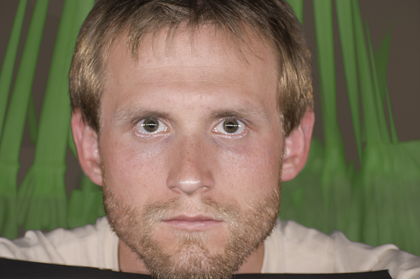

UDN
Search public documentation:
TakingBetterPhotosForTexturesKR
English Translation
日本語訳
中国翻译
Interested in the Unreal Engine?
Visit the Unreal Technology site.
Looking for jobs and company info?
Check out the Epic games site.
Questions about support via UDN?
Contact the UDN Staff
日本語訳
中国翻译
Interested in the Unreal Engine?
Visit the Unreal Technology site.
Looking for jobs and company info?
Check out the Epic games site.
Questions about support via UDN?
Contact the UDN Staff
텍스처용 사진 더 잘 찍기
문서 변경내역: Jordan Walker 작성. 홍성진 번역.
개요
셋업

결과
 이 사진은 포토샵에서 max(x,y) 값을 반환하는 Lighten 블렌드 모드를 사용하여 위치를 맞춰 블렌딩한 것입니다. 그 결과 각 이미지의 가장 밝은 픽셀만 뽑아내어 그림자를 없앨 수 있었습니다. 눈두덩이 부분에 희미한 스페큘러 하이라이트가 아직 남아있어 약간 손을 댈 필요가 있으니, 각 이미지에서 하이라이트를 지워줘야 하겠습니다. 그 결과 스페큘러 하이라이트는 없으면서 아주 약간의 직사광만 남은 얼굴 사진을 얻었습니다.
이 사진은 포토샵에서 max(x,y) 값을 반환하는 Lighten 블렌드 모드를 사용하여 위치를 맞춰 블렌딩한 것입니다. 그 결과 각 이미지의 가장 밝은 픽셀만 뽑아내어 그림자를 없앨 수 있었습니다. 눈두덩이 부분에 희미한 스페큘러 하이라이트가 아직 남아있어 약간 손을 댈 필요가 있으니, 각 이미지에서 하이라이트를 지워줘야 하겠습니다. 그 결과 스페큘러 하이라이트는 없으면서 아주 약간의 직사광만 남은 얼굴 사진을 얻었습니다.
 아래는 편광 없는 비슷한 사진을 조합한 것으로, 편광의 중요성을 알 수 있습니다.
아래는 편광 없는 비슷한 사진을 조합한 것으로, 편광의 중요성을 알 수 있습니다.

아래는 렌즈 편광기를 90 도씩 회전시켜 라이트와 평행으로 놓은 상태로 찍은 사진 15 장입니다. 표면에서 바로 반사되어 나오는 빛을 볼 수 있습니다. 이 사진은 모두 똑같은 노출과 화이트 밸런스 상태에서 찍은 것이지만, 라이트가 빗각에 있을 때는 스페큘러 반응이 좀 더 도드라지며 그 색도 좀 더 라이트의 색에 가까워 지는 것을 볼 수 있습니다. 예상했던 바지만, 실제 눈으로 확인할 수 있다니 어찌 재밌지 아니하겠습니까. 흥미로운 관전 포인트 또 한가지, 평행 편광과 교차 편광의 디테일 모양 차이입니다. 반사되는 스페큘러 라이트를 보면 교차 편광 이미지의 디퓨즈(확산)와 스캐터링(산란) 성분보다 디테일이 훨씬 살아있는 것을 볼 수 있습니다. 평행 편광 이미지는 텍스처 제작용으로 그리 좋지는 않습니다만, 피부를 표현하는 셰이더를 만드는 데 있어서는 확실히 좋게 생겼습니다.
흥미로운 관전 포인트 또 한가지, 평행 편광과 교차 편광의 디테일 모양 차이입니다. 반사되는 스페큘러 라이트를 보면 교차 편광 이미지의 디퓨즈(확산)와 스캐터링(산란) 성분보다 디테일이 훨씬 살아있는 것을 볼 수 있습니다. 평행 편광 이미지는 텍스처 제작용으로 그리 좋지는 않습니다만, 피부를 표현하는 셰이더를 만드는 데 있어서는 확실히 좋게 생겼습니다.

다른 사용법